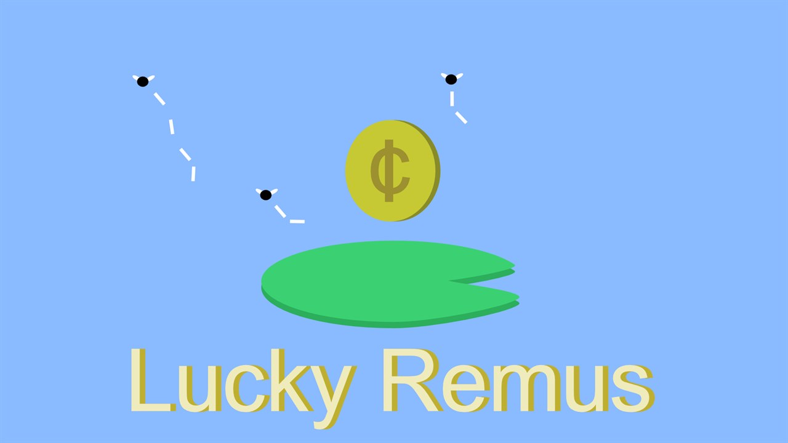

Project Remus
A wave shooter built in nine days for the Official 2026 Unity Game Jam, whose theme was "Lucky Number". Every kill rolls a die, and you spend the rolls on your stats. I was one of two programmers on a team of five.

Overview
Project Remus (the title screen calls it Lucky Remus) is a 3D arena shooter seen from above. You hold off ten waves of flies and mosquitoes, and clearing the tenth wins the run. It plays in the browser on itch.io.
Every kill rolls a die into a tray at the top of the screen. Once dice have landed, pressing 1 to 6 puts all of them into one stat: health, stamina, speed, fire rate, damage or armor. Each die adds the number it rolled, so a run is a string of small bets on what the next wave will ask for.
The lucky number is the jam's theme. You pick a number from 1 to 6 on the main menu, and whenever a die lands on it you get a star: ten seconds with every stat doubled, and disco lights.
My Contributions
- Built the dice and level-up system: the tray of rolling dice, the die that pops out where an enemy died and shows its roll, and spending dice on the six stats.
- Wrote the event bus the game's parts talk through. An enemy's death raises one event, and the dice tray hears it without either script knowing about the other. My dice and the other programmer's enemies could be written separately.
- Made the HUD and every menu: health, stamina and armor bars, the stat panel, wave intros, the timer and kill count, plus the main menu, upgrades, pause, game over and win screens.
- Added the lucky number and its star, and tuned the difficulty: eight enemy types set out in hand-made wave plans, charge attacks with a warning on the ground, and trenches that cost half your health if you miss the bridge.
- Ran the team's shared branch, merging the art, animation, level and audio work, and wrote the editor menu item that builds and zips the web version for itch.io.